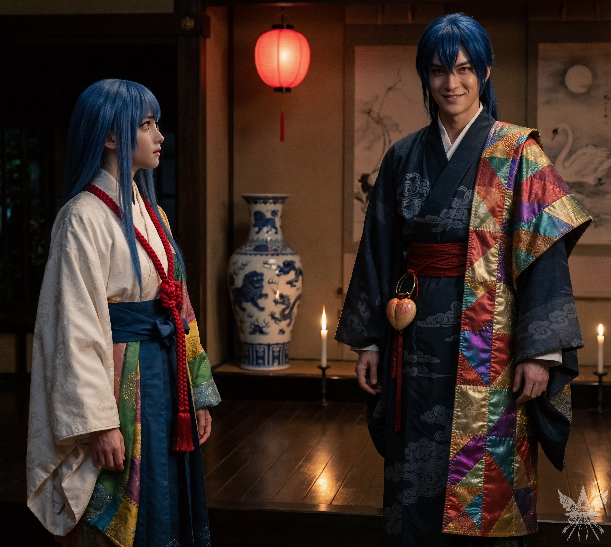

第78章 楽園の秘密
天界――それは、人それぞれが思い描くユートピアだ。永遠の至福に包まれた神の国か、あらゆる快楽が満たされた理想郷か。だが、真の姿を知る生者はいない。
もし生きたままあの世を垣間見ることができたら。しかし、その美しさに触れれば現世には戻りたくなくなるという、甘い罠が潜んでいるのかもしれない。そして皮肉なことに、この天国と謳われる場所にも、煩雑な官僚手続きが必要らしい。想像以上に面倒な世界だ。この世界の謎を解き明かし、創造主たる龍神を閻魔大審議会に敵対させること。それが最優先事項だった。
夕暮れの空に溶け込む雲は、境界を曖昧にしている。幻想的な静寂の中、あま子からの問いかけで現実に引き戻された。
「幻想郷の魔法使い、アレクサンドラと申します。こちらは私の弟子です」
使い慣れた偽名を女性形にして名乗る。弟子の名前はあえて伏せたが、当のポルターガイストは深々と頭を下げた。
「ちゆりです。よろしくお願いします。桃畑、もっと見てみたいな。案内してくれる？」
「ええ、喜んで！」
低い木々の間を縫うように進む。もらった桃を一口かじると、その強烈な甘さに思わず立ち止まった。柔らかくもしっかりとした果肉から滴る果汁は、まるで蜜のようだ。ギリシャの新鮮な果物すら霞んでしまう。
「私たち、仏教会から派遣されているんです」
前を歩くあま子が振り返った。
「仏教会がここの株のほとんどを持っているので、比那名居家はほんの少しだけなんです。『比那名居の桃、楽園の極上スイーツ！』……なんて、そんな感じでしょうか？」
少し恥ずかしそうに、テレビCMのようなナレーションを口にする。
（株？ CM？ なるほど、この天界は随分と商売上手らしい）
内心で皮肉りながら、剪定作業をする僧侶たちとすれ違い、簡素な木のテーブルとベンチがある広場へ出た。
「桃、美味しかったですか？」
「ええ、こんなにおいしい桃は初めてです。この桃畑は、あま子ちゃんのご家族が作っているんですか？」
「ううん、一から作ったわけじゃなくて……元々は天使たちの土地だったんですけれど、仏教会が……その、ちょっと説明が難しいんですけれど」
困ったように微笑むあま子。親しみを込めて探りを入れる。
「じゃあ、ご家族でここで働いているのはあま子ちゃんだけなの？」
「この一年はほとんど私一人なんです。修行者さんたちがここで心を落ち着けられるというので、私がちょっとお手伝いしているだけで。前は、お姉ちゃんと一緒にやっていたんですけれど、お姉ちゃんはここがあまり好きじゃなかったみたいで……」
「そうなんだ。じゃあ、家はあの街にあるの？」
カナが二つ目の桃にかぶりつきながら尋ねた。
「はい、家は寺院のすぐ近くです。お父さんとお母さんは僧侶で、お兄ちゃんは先生。私はまだここで……」
「お姉ちゃんは？」
核心に迫る問いに、あま子は言葉を濁した。
「お姉ちゃんは……えっと、何て言えばいいのかな……あ、そうだ！ 新しい品種、見てみますか？」
東へ続く小道の先には、背の低い木にメロンほどもある巨大な桃が実っていた。
「すごい…！ 品種改良？」
「まあ、食べてもいいんですけれど、全然美味しくないですよ。修行者さんたちは、この品種をもっと改良しなきゃいけないんだって」
「修行者って、お坊さんのこと？」
「知らないんですか？ 修行者というのは、天国仏教会で修行を始める見習いのことです。簡単な試験に受かれば、誰でもなれるんです。天国に来た死者の魂は、ほとんどがすぐに修行者になろうとするんですけれど、基本が分かっていないからすぐに脱落して転生しちゃうんです」
テーブルに戻ると、あま子は巨大な桃を切り分けてくれた。どこからともなく現れたソクラテスが、ちゃっかりと彼女にすり寄って喉を鳴らしている。試作品の桃はホクホクとしたジャガイモのような食感で、甘みは薄かった。
「試作品、市場に持っていかなきゃ……誰か気に入ってくれるかも……」
独り言のように呟いた後、あま子は視線を上げてきた。
「お二人は、もう都には行かれましたか？」
周囲はすっかり桃色に染まっていた。夜を過ごす場所を確保しなければならない。
「実はまだなんだ！ 行きたかったんだけど、あの大天使のせいで……あま子さん、なんとか助けてくれない？」
カナの言葉に、あま子は戸惑い、額に手を当てた。
「あの……都に行きたい理由って、何ですか？ ちゃんとした理由がないと……ちょっと……」
規則を重んじているのか、詮索することへのためらいが見える。
落ち着いた声で答えた。
「永江衣玖様に個人的な用事があるんです。あま子さん、どうか助けてもらえませんか？」

極上の甘い香りと夕暮れの静寂の中、あま子の動きが完全に止まった。
視線は虚空を彷徨い、提案の厚かましさに思考がフリーズしている。気まずい沈黙が場を支配する中、聞こえるのは風の音だけ。彼女の膝の上では、我が物顔で居座るソクラテスが、我関せずとばかりにテーブルの桃を半眼で見つめている。
軽いパニックに陥ったあま子は、剪定ばさみで桃の種を割り、中の仁をかじった。目も合わせずに答える。
「うーん……どうしよう……。永江様は、アポなしでは会ってくれませんし……。それに、お住まいは普通の人間は入れないんです。仏か、よっぽど重要な用事で来ている修行者じゃないと……」
ここでカナが目を輝かせた。
「修行者には誰でもなれるって言ってたよね、あま子さん？ せっかく天界に来たんだし、私たちも修行者になりたいな」
「修行者に……なる？ それは……確かになれますけれど……」
「お願い！ 助けて！」
言葉と同時に、ヴィシュッダ・チャクラの魔力の波動が放たれた。抗いようのない力が空気を震わせる。
「分かりました。私が責任を持ちます。でも、お二人は仏教と八正道について、どのくらいご存知ですか？ 今日は私の連れとして有頂天市には入れてあげられますが、明日はすぐにでも入学試験を受けて、ご自分の通行証を手に入れた方がいいですよ」
カナと一緒に深く頭を下げる。これで明日、誰かに変身すれば堂々と天界を歩き回れる。
あま子の肩に鎮座したソクラテスが、意味ありげな視線を向けてきた。言葉を発しないこの猫の腹の底は、相変わらず読めない。
桃畑の入り口で、あま子が20人ほどの僧侶たちに声をかけた。桃の籠を運ぶ準備が始まる。あま子が一番大きな籠を持とうとした瞬間、ソクラテスが取っ手にじゃれつき、意地でも触れさせようとしない。無言の妨害を数十秒見つめ、ようやくその意図を察した。「弟子」と共に、あま子から籠を受け取る。
「そんな……！ いいんですよ！」
遠慮するあま子の手にソクラテスがすり寄り、彼女はくすぐったそうに笑い声をあげた。見事なまでの操り人形師ぶりだ。
夕暮れに染まった雲海を踏みしめ、都へ続く道を進む。ずしりと重い籠が肩に食い込む。
最後尾から、あま子が弾むような声で尋ねてきた。
「あの、外の世界ってどんなところなんですか？ もしよかったら、教えてもらえませんか？」
（色んな世界を見てきたが、共通するのは死と不公平の存在だ。もっとも、天界にもそれはありそうだが）
適当に言葉を返す。
「緑がいっぱいで、地面は黒くて……海もあるわ。あま子ちゃんは見たことないの？」
「はい、一度もないんです。私とお兄ちゃんは、両親が天界に来てからここで生まれたので……。仏は天界を出られないんです。悟りに集中しなければならないから」
「じゃあ、私たちも修行者になったら、天界から出られなくなるの？」
桃を頬張りながらカナが問う。
「修行者には、そこまで厳しい決まりはないですよ。でも、修行が性に合って天界が気に入ったら、正式な仏になることもできるんです」
しばらく黙々と歩き続けた後、ふと思い出して尋ねた。
「あま子ちゃん、天界には龍神様がいらっしゃるって本当？」
「ええ、龍神島というずっと遠くの島にお住まいなんですよ。私はお会いしたことはないんですけれど……。選ばれた人しか行けない特別な場所で。もしかして、お二人は龍神様に何かご用ですか？」
「いえ、用事があるのは永江様で、龍神様には特に……」
「それなら良かったです。龍神様に関することはすべて永江様が担当しているので、龍神様ご自身にはお会いにならない方がいいそうです」
「どうして？ 龍神様はそんなに怖い方なんですか？」
首を傾げるカナに、あま子は困ったように微笑んだ。
「うーん、どうなんでしょう……お会いしたことがないから、分からないんです」
やがて一行の足が止まった。
冷気と凄まじい威圧感を放つ大天使ミカエルが、白亜の門の前に立ち塞がっている。巨躯の背には白い翼、手には長い剣。僧侶たちが懐から包みを取り出し、剣先に触れさせていく。
あま子が進み出た。
「ミカエル様、このお二人は私の連れで、仏の道に興味があるそうです」
ミカエルがわずかに頭を傾げ、鋭い視線がこちらを射抜く。
「二人が入門の手引きを受け取るまでは、私が責任を持ちます」
差し出された巻物に剣先が触れると、大天使はゆっくりと脇へ退いた。
「二人だけで都を歩かせないように」
静かな声だけを残し、その姿は空間に溶けるように消え失せた。
張り詰めた空気が緩み、三人は門をくぐって都に入った。
有頂天市は、誰もが思い描く「まばゆいばかりの神の国」とは少し趣が異なっていた。

足首まで漂う乳白色の霧を踏みしめながら、一点透視図法のように奥へと続く道を歩く。視線の先には巨大な祭壇が鎮座し、立ち並ぶ白亜の尖塔群が、夕日を受けて神々しい黄金色の輪郭を浮かび上がらせている。地上とは隔絶された吸い込まれるような静寂の中、すれ違う白い衣の修行者たちの衣擦れの音だけが響く。この非現実的な光景の中で談笑し、休息を取る彼らの生活感が、天界という異常な空間に奇妙な実在感を与えていた。
公園の向かいには、巨大な書物を積み重ねたような、湾曲した屋根の三階建ての建物があった。窓から漏れる温かな光と、隙間なく並ぶ書物の背表紙が見える。
（龍神の手がかりがあるかもしれない。後で調べておこう）
あま子に連れられ市場の屋台を抜けるが、試作品の桃を届けるはずの知り合いの店はすでに閉まっていた。人気のない路地裏で、蛍光色に光る怪しげな切れ端を見つけ、思わず足を止める。
「ねえちゃん！ 天界の極楽、いかが？ 初回はサービスだぜ……」
暗がりから男の潜めた声がした。あま子が慌てて袖を引っ張り、その場から足早に立ち去る。
住宅街に入ると、足元の雲はふわふわとしているが、しっかりとした反発力があった。四、五階建ての建物がひしめき合う薄暗い空を、翼を持つ影が窓から窓へと飛び交っている。あま子が足を止め、知り合いらしき翼のない男――おそらく仏だろう――と立ち話を始めた。
肩の上では、ソクラテスが相変わらず王様のようにふんぞり返り、念入りに毛づくろいをしている。
「この仏どもが……一体いつになったらこの抑圧は終わるんだ……！」
不意に、押し殺したような低い声が上から降ってきた。カナがバルコニーを指さす。息を潜めて見上げると、二つの影がパイプをくゆらせている。
「神は我らを見捨てはしない、カマエル。信じよ。龍神様は必ず我らを見守ってくださる。私はそう信じている。なぜ君は信じぬのだ？」
片方が耳打ちし、二人は部屋の中へ消えていった。
「くすっ、見た？」
カナが小声で囁く。
「天使たちも、仏を歓迎しているわけじゃなさそうね」
「控えめに言ってもね。これは後で利用できそう……」
意味ありげに笑うポルターガイストの横顔は、悪巧みを楽しむ策士のそれだった。
立ち話を終えたあま子に続き、並木道に囲まれた小高い丘を登る。そこに建つ比那名居家の屋敷は、裕福な暮らしぶりを如実に物語る立派な造りだった。
あま子が鍵を開け、中に招き入れられる。用意されたスリッパに履き替え、奥へと進む。
薄暗い空間を満たすのは、赤い提灯と床の燭台が落とす琥珀色の光。床の間に飾られた白鳥の水墨画や巨大な磁器の壺といった伝統的な静謐さの中に、立ちはだかる二人の姿が奇妙なほど鮮烈な異物感を放っている。
「しーっ……両親は寝ていると思うから、明日の朝紹介するね……」

「あま、誰と話しているんだ？」
奥から現れた青年が、品定めをするような目でこちらを射抜いた。その口角には、知性と余裕、そして微かな俗っぽさを孕んだ笑みが浮かんでいる。傍らで緊張した面持ちで見上げるあま子とは対照的だった。
「その子たちは……？」
「えっと……兄の空郎です」
軽く頭を下げる。
「この方たちは……えっと……幻想郷から来た魔法使いで、仏教を学びたいそうなの。受け入れてくれる？」
（アレクサンドラという偽名はすっかり忘れられたようだが、好都合だ）
空郎は目を細め、上から下へとねっとりとした視線を這わせた。
「今すぐか？ ……まあ、こんなにかわいいお嬢さんたちを連れてきたんじゃ、無下に断るわけにもいかないな、あま」
教師としての体裁を取り繕いながらも、その親切心の裏には明白な下心が透けて見えた。
「明日でもいいんだけど……二人を助けるって約束しちゃったし……」
「うーん……そうか、約束か。じゃあ、試験は明日の正午、寺院で。遅れないようにね、お嬢さんたち」
（いけ好かない男だ）
内心で冷ややかに見下しつつ、表面上は穏やかな表情を取り繕う。一方のカナは、普段の狡猾さを微塵も感じさせない完璧な愛嬌で、空郎に微笑みかけていた。
（この小悪魔め）
カナが社交辞令を交わしている隙に、ソクラテスの様子を窺う。銀の皿に盛られた新鮮な魚とミルクを与えられ、すっかり愛玩動物の顔に成り下がっている。高度な知性など微塵も感じさせない振る舞いだった。
夕闇が完全に落ちた頃、客間へ案内された。あま子が手際よく布団を敷き、
「試験の前に読んでおくと良いですよ」
と数冊の仏教書を置いて退出していく。どうやら屋敷の家事は家族で分担しているらしい。
「今日は疲れたわ」
布団に腰を下ろし、深く息を吐き出す。
「ほんと。今のところは何とか順調ね。ねえ、私、あの男に気に入られたみたい。きっと試験では優遇してくれるわ」
カナが得意げに微笑んだ。
「そうね。もしかして、空郎のこと気に入った？」
探りを入れると、カナは少しムッとしたように言い返す。
「まさか。私が人間や仏に惚れるわけないでしょ。それより、メデアこそあいつが気になってるんじゃないの？」
「まあ、悪い人間ではないだろうけど、そこまででもないわ。取り入ろうと思えばできたかもしれないけど、今はそういう気分じゃないだけ」
「もう、いいじゃない。ねえ、面白そうだし、今度は思いっきり色目を使って、メデアと恋のライバルを演じてみるのもいいわね。あいつを私たちの『ハーレム』に迎え入れてあげましょうか。ふふっ」
いたずらっぽく笑うカナに、現実的な問題を突きつける。
「そもそも、試験を受けるつもりなの？ 今度の『優遇』に期待してるの？ それってリスクが高すぎるわ」
「うーん……まだ決めてないわ。メデアはどうするの？」
「ねえ、カナ。私は今日の午後四時に変身したわよね？ カナは午後五時頃だったでしょ。試験に落ちたら、五時間くらいどこかで時間を潰さなきゃいけない。危険な橋を渡ることになるかもしれないし、見つかったら厄介だし……怖くないの？」
「私が怖いって言ったら、メデアのやる気がなくなっちゃうでしょ？ だから、怖くないことにするわ」
リュックサックから射命丸の新聞を取り出す。誇張表現はさておき、人々の怒りを買ったのは事実だ。カナは「龍神の石像を破壊した」という記事を読み返し、クスクスと笑った。
「ねえ、この新聞、誰かに届けなきゃ。きっと、天使たちにも仏たちにも、行政の中枢みたいなものがあるはずよ。もしかしたら、天界にも新聞社みたいなものがあるかもしれないわね 」
「だったらどっちにする？ 天使の詰め所？ それとも仏教会？ 」
「分からないわ。でも、明日の行動は決めておいた方が良さそうね 」
不意に首筋に微かな重みを感じ、息苦しさを覚えた。
いつの間にか忍び込んでいたソクラテスが、耳元でゴロゴロと喉を鳴らしている。
「試験をサボるなんて考えないことだニャ。受からないと困るニャ 」